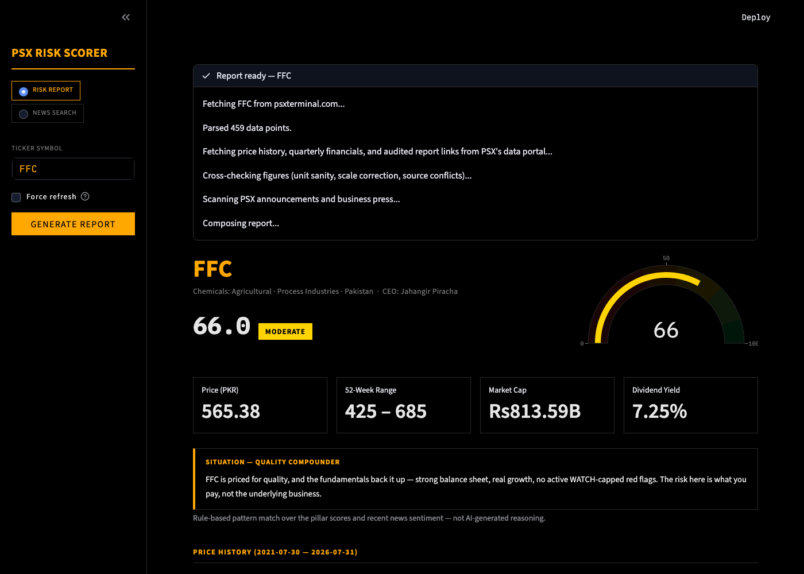
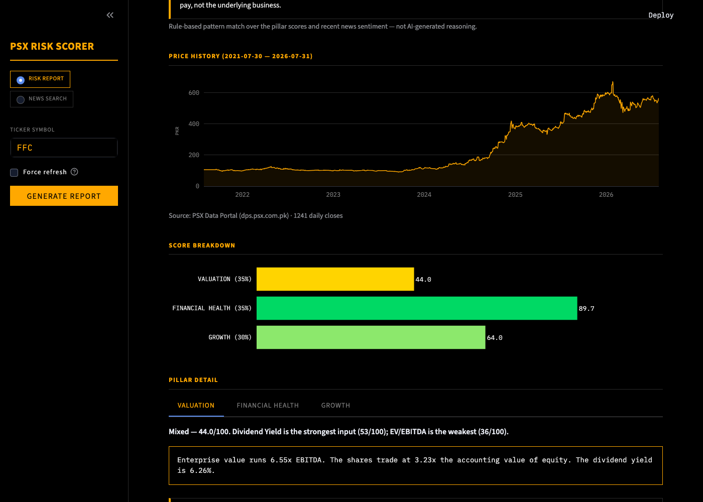
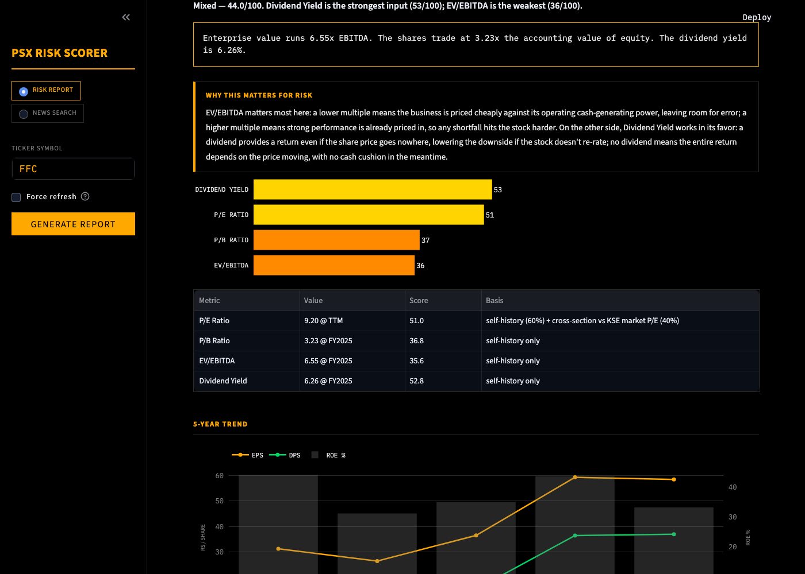
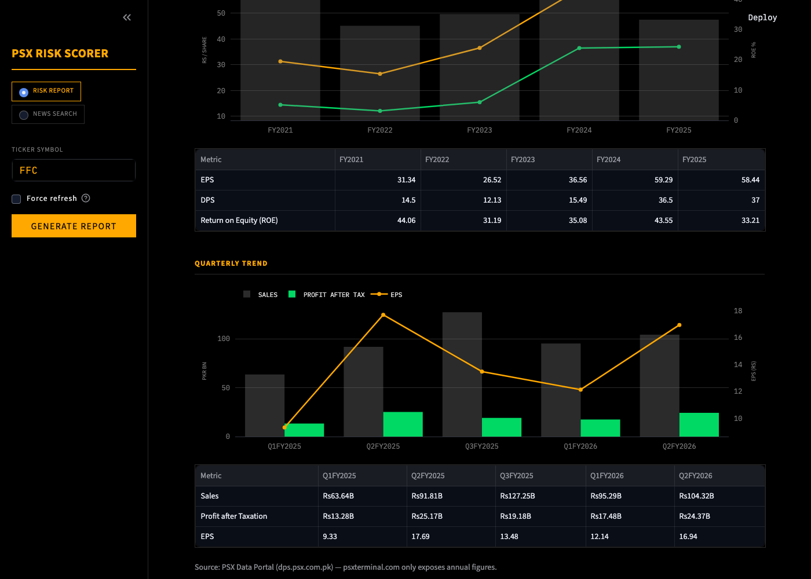
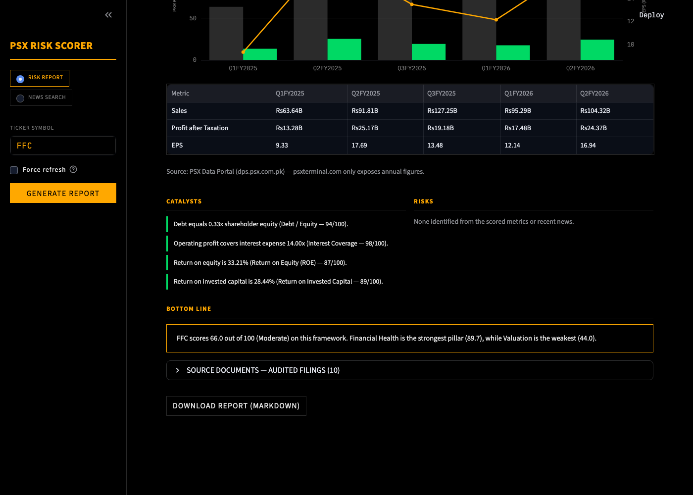

📈 PSX Risk Scorer
A free risk-scoring tool for Pakistan Stock Exchange stocks that generates a full narrative report where every sentence is traceable to a number it computed, not an LLM's guess.
When I wanted to invest in Pakistani stocks, there was no single place that told me if a company was actually a safe bet. The numbers were split across a pricing terminal, a quarterly filings portal, and PDF annual reports, with no consistent way to compare one company's risk against another's. Making a real decision meant hours of digging, or a guess.
So I built a tool that does that digging automatically. It pulls a company's financials from multiple official sources and cross-checks them against each other. It once caught a source silently understating a company's numbers by 1000x. It then scores the company across Valuation, Financial Health, and Growth, using the kind of framework equity analysts actually use. Every sentence in the report comes from a number the tool itself computed, not an AI's guess.
Now I get a complete, trustworthy risk report on any Pakistani stock in under 20 seconds: one risk score, a five-year trend, the catalysts and risks that actually matter, and links to the source documents. It costs nothing to run, no subscription and no API key, and I trust every number because I can see exactly where it came from.
Screenshots
All screenshots below are of a live-generated report for FFC (Fauji Fertilizer Company), pulled fresh from PSX data sources at the time they were taken.




